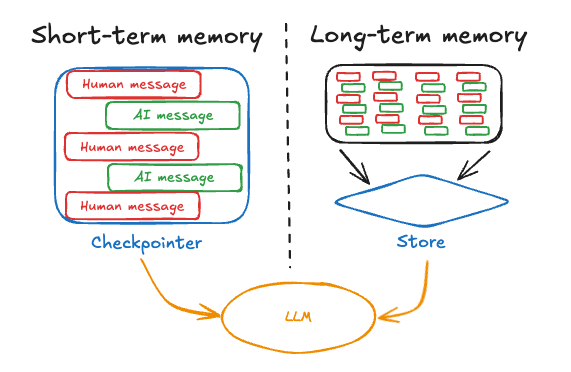

通过Agent保存历史记录
Langchain中，通过ChatMessageHistory保存每一轮的信息，调用大模型时，作为参数输入
LangGraph中，Agent封装了消息记录的流程
- 短期记忆，例如一个会话中的记忆，langgraph封装成了checkpoint
- 长期记忆，指的是外部的记忆，多个会话的记忆，langgraph封装成了Store

对于记忆管理，LangGraph的管理方式比具体实现或许更有参考价值 在具体实现时，LangGraph都默认提供了InMemorySaver和InMemoryStore，也同样可以转移到外部存储中，不过，短期记忆通常都是代表那些会话级别的小内存，长期记忆通常代表用户级别或者是应用级别的大内存。短期记忆的内存比较紧张，需要更加频繁的清理内存，并对已有消息记录进行总结，从而减少内存占用，而长期记忆的内存比较充足，不太频繁需要清理内存，需要关注的是对已有消息如何检索。
短期记忆
import os
from langgraph.checkpoint.memory import InMemorySaver
from langgraph.prebuilt import create_react_agent
from config.load_key import load_key
from langchain_openai import ChatOpenAI
if not os.environ.get("OPENAI_API_KEY"):
os.environ["OPENAI_API_KEY"] = load_key("OPENAI_API_KEY")
from langchain.tools import tool
checkpointer = InMemorySaver()
@tool
def get_weather(city:str) -> str:
"""Get the current weather in city."""
return f"The current weather in {city} is sunny with a temperature of 25°C."
llm = ChatOpenAI(
model="gpt-4o-mini",
base_url="https://api.chatanywhere.tech/v1"
)
agent = create_react_agent(
model=llm,
tools=[get_weather],
checkpointer=checkpointer
)
config = {
"configurable": {
"thread_id": "1"
}
}
new_york_response = agent.invoke(
{"messages": [{"role": "user", "content": "What is the weather like in New York?"}]},
config
)
print(new_york_response)
Bei_Jing_response = agent.invoke(
{"messages": [{"role": "user", "content": "What is the weather like in Bei Jing"}]},
config
)
print(Bei_Jing_response){'messages': [HumanMessage(content='What is the weather like in New York?', additional_kwargs={}, response_metadata={}, id='17a3a4bf-a276-4798-8fca-37f978a39c5a'), AIMessage(content='', additional_kwargs={'tool_calls': [{'id': 'call_4fTSUEtaxYtcXkhwxvd0nawY', 'function': {'arguments': '{"city":"New York"}', 'name': 'get_weather'}, 'type': 'function'}], 'refusal': None}, response_metadata={'token_usage': {'completion_tokens': 15, 'prompt_tokens': 53, 'total_tokens': 68, 'completion_tokens_details': {'accepted_prediction_tokens': None, 'audio_tokens': 0, 'reasoning_tokens': 0, 'rejected_prediction_tokens': None}, 'prompt_tokens_details': {'audio_tokens': 0, 'cached_tokens': 0}}, 'model_name': 'gpt-4o-mini-2024-07-18', 'system_fingerprint': 'fp_560af6e559', 'id': 'chatcmpl-C6z2nWKVqfHUEyeXtEVJM82GWfSwg', 'service_tier': None, 'finish_reason': 'tool_calls', 'logprobs': None}, id='run--738950e7-2155-4cda-b8d3-053eb0071462-0', tool_calls=[{'name': 'get_weather', 'args': {'city': 'New York'}, 'id': 'call_4fTSUEtaxYtcXkhwxvd0nawY', 'type': 'tool_call'}], usage_metadata={'input_tokens': 53, 'output_tokens': 15, 'total_tokens': 68, 'input_token_details': {'audio': 0, 'cache_read': 0}, 'output_token_details': {'audio': 0, 'reasoning': 0}}), ToolMessage(content='The current weather in New York is sunny with a temperature of 25°C.', name='get_weather', id='c1679472-9adb-4233-9461-346185ed723a', tool_call_id='call_4fTSUEtaxYtcXkhwxvd0nawY'), AIMessage(content='The current weather in New York is sunny with a temperature of 25°C.', additional_kwargs={'refusal': None}, response_metadata={'token_usage': {'completion_tokens': 17, 'prompt_tokens': 92, 'total_tokens': 109, 'completion_tokens_details': {'accepted_prediction_tokens': None, 'audio_tokens': 0, 'reasoning_tokens': 0, 'rejected_prediction_tokens': None}, 'prompt_tokens_details': {'audio_tokens': 0, 'cached_tokens': 0}}, 'model_name': 'gpt-4o-mini-2024-07-18', 'system_fingerprint': 'fp_560af6e559', 'id': 'chatcmpl-C6z2pma7vXbLIx8bwehgKEaADeUGd', 'service_tier': None, 'finish_reason': 'stop', 'logprobs': None}, id='run--32456eec-3709-4dfd-8a13-43177179b4dd-0', usage_metadata={'input_tokens': 92, 'output_tokens': 17, 'total_tokens': 109, 'input_token_details': {'audio': 0, 'cache_read': 0}, 'output_token_details': {'audio': 0, 'reasoning': 0}})]}
{'messages': [HumanMessage(content='What is the weather like in New York?', additional_kwargs={}, response_metadata={}, id='17a3a4bf-a276-4798-8fca-37f978a39c5a'), AIMessage(content='', additional_kwargs={'tool_calls': [{'id': 'call_4fTSUEtaxYtcXkhwxvd0nawY', 'function': {'arguments': '{"city":"New York"}', 'name': 'get_weather'}, 'type': 'function'}], 'refusal': None}, response_metadata={'token_usage': {'completion_tokens': 15, 'prompt_tokens': 53, 'total_tokens': 68, 'completion_tokens_details': {'accepted_prediction_tokens': None, 'audio_tokens': 0, 'reasoning_tokens': 0, 'rejected_prediction_tokens': None}, 'prompt_tokens_details': {'audio_tokens': 0, 'cached_tokens': 0}}, 'model_name': 'gpt-4o-mini-2024-07-18', 'system_fingerprint': 'fp_560af6e559', 'id': 'chatcmpl-C6z2nWKVqfHUEyeXtEVJM82GWfSwg', 'service_tier': None, 'finish_reason': 'tool_calls', 'logprobs': None}, id='run--738950e7-2155-4cda-b8d3-053eb0071462-0', tool_calls=[{'name': 'get_weather', 'args': {'city': 'New York'}, 'id': 'call_4fTSUEtaxYtcXkhwxvd0nawY', 'type': 'tool_call'}], usage_metadata={'input_tokens': 53, 'output_tokens': 15, 'total_tokens': 68, 'input_token_details': {'audio': 0, 'cache_read': 0}, 'output_token_details': {'audio': 0, 'reasoning': 0}}), ToolMessage(content='The current weather in New York is sunny with a temperature of 25°C.', name='get_weather', id='c1679472-9adb-4233-9461-346185ed723a', tool_call_id='call_4fTSUEtaxYtcXkhwxvd0nawY'), AIMessage(content='The current weather in New York is sunny with a temperature of 25°C.', additional_kwargs={'refusal': None}, response_metadata={'token_usage': {'completion_tokens': 17, 'prompt_tokens': 92, 'total_tokens': 109, 'completion_tokens_details': {'accepted_prediction_tokens': None, 'audio_tokens': 0, 'reasoning_tokens': 0, 'rejected_prediction_tokens': None}, 'prompt_tokens_details': {'audio_tokens': 0, 'cached_tokens': 0}}, 'model_name': 'gpt-4o-mini-2024-07-18', 'system_fingerprint': 'fp_560af6e559', 'id': 'chatcmpl-C6z2pma7vXbLIx8bwehgKEaADeUGd', 'service_tier': None, 'finish_reason': 'stop', 'logprobs': None}, id='run--32456eec-3709-4dfd-8a13-43177179b4dd-0', usage_metadata={'input_tokens': 92, 'output_tokens': 17, 'total_tokens': 109, 'input_token_details': {'audio': 0, 'cache_read': 0}, 'output_token_details': {'audio': 0, 'reasoning': 0}}), HumanMessage(content='What is the weather like in Bei Jing', additional_kwargs={}, response_metadata={}, id='ce33fe2e-95da-494b-ba35-abcf1332a794'), AIMessage(content='', additional_kwargs={'tool_calls': [{'id': 'call_MvWURggjW263ekoheZo4nXf7', 'function': {'arguments': '{"city":"Bei Jing"}', 'name': 'get_weather'}, 'type': 'function'}], 'refusal': None}, response_metadata={'token_usage': {'completion_tokens': 15, 'prompt_tokens': 124, 'total_tokens': 139, 'completion_tokens_details': {'accepted_prediction_tokens': None, 'audio_tokens': 0, 'reasoning_tokens': 0, 'rejected_prediction_tokens': None}, 'prompt_tokens_details': {'audio_tokens': 0, 'cached_tokens': 0}}, 'model_name': 'gpt-4o-mini-2024-07-18', 'system_fingerprint': 'fp_560af6e559', 'id': 'chatcmpl-C6z2rirOQNljCya3GOxM6rSSrTnKv', 'service_tier': None, 'finish_reason': 'tool_calls', 'logprobs': None}, id='run--3ef80e70-63bc-43cb-bce5-59a400c98ad7-0', tool_calls=[{'name': 'get_weather', 'args': {'city': 'Bei Jing'}, 'id': 'call_MvWURggjW263ekoheZo4nXf7', 'type': 'tool_call'}], usage_metadata={'input_tokens': 124, 'output_tokens': 15, 'total_tokens': 139, 'input_token_details': {'audio': 0, 'cache_read': 0}, 'output_token_details': {'audio': 0, 'reasoning': 0}}), ToolMessage(content='The current weather in Bei Jing is sunny with a temperature of 25°C.', name='get_weather', id='9a03d150-adfb-4bb0-80f8-e0b24fc988e9', tool_call_id='call_MvWURggjW263ekoheZo4nXf7'), AIMessage(content='The current weather in Beijing is sunny with a temperature of 25°C.', additional_kwargs={'refusal': None}, response_metadata={'token_usage': {'completion_tokens': 16, 'prompt_tokens': 163, 'total_tokens': 179, 'completion_tokens_details': {'accepted_prediction_tokens': None, 'audio_tokens': 0, 'reasoning_tokens': 0, 'rejected_prediction_tokens': None}, 'prompt_tokens_details': {'audio_tokens': 0, 'cached_tokens': 0}}, 'model_name': 'gpt-4o-mini-2024-07-18', 'system_fingerprint': 'fp_560af6e559', 'id': 'chatcmpl-C6z2uXatMoYsuqtoNI0ZcyzZOSQ2F', 'service_tier': None, 'finish_reason': 'stop', 'logprobs': None}, id='run--dd5e9127-3543-4b2f-bdcb-226cd8012608-0', usage_metadata={'input_tokens': 163, 'output_tokens': 16, 'total_tokens': 179, 'input_token_details': {'audio': 0, 'cache_read': 0}, 'output_token_details': {'audio': 0, 'reasoning': 0}})]}历史记录消息处理策略
短期记忆被认为是比较紧张的，所以需要定期清理，防止历史消息过多。 LangGraph的Agent中，提供了一个pre_model_hook属性，可以在每次调用大模型触发，通过这个hook，可以定期管理短期记忆。 LangGraph中管理短期记忆的方法主要有两种：
- Summarization总结：用大模型的方式，对短期记忆进行总结，再将总结的结果作为新的短期记忆。
- Trimming删除：直接把短期记忆中最旧的消息删除掉。
LangGraph提供了SummarizationNode函数，用于是用大模型的方式对短期记忆进行总结。
from typing import Any
from langmem.short_term import SummarizationNode
from langgraph.prebuilt.chat_agent_executor import AgentState
from langchain_core.messages.utils import count_tokens_approximately
# Summarization总结
summarizationNode = SummarizationNode(
model = llm,
token_counter=count_tokens_approximately,
max_tokens=384,
max_summary_tokens=128,
output_messages_key="llm_input_messages"
)
class State(AgentState):
# 注意：这个状态管理保存上一次总结的结果，避免每一次调用大模型结果时，都要调用一遍
# 这是一个比较常有的优化方式
context: dict[str, Any]
checkpointer = InMemorySaver()
agent = create_react_agent(
model=llm,
tools=[get_weather],
checkpointer=checkpointer,
pre_model_hook=summarizationNode,
state_schema=State
)LangGraph通过trim_messages函数，用于最旧的信息进行删除。
from langchain_core.messages.utils import (
count_tokens_approximately,
trim_messages
)
from langgraph.prebuilt import create_react_agent
def pre_model_hook(state):
trimmed = trim_messages(
state["messages"],
strategy="last",
token_counter = count_tokens_approximately,
max_tokens=384,
start_on="human",
end_on=("human","tool")
)
return {"llm_input_messages": trimmed}
checkpointer = InMemorySaver()
agent = create_react_agent(
model=llm,
tools=[],
pre_model_hook=pre_model_hook,
checkpointer=checkpointer
)from langgraph.prebuilt import create_react_agent, InjectedState
from typing import Annotated
from langgraph.prebuilt.chat_agent_executor import AgentState
from langchain_core.tools import tool
class CustomState(AgentState):
user_id: str
@tool
def get_user_info(
state: Annotated[CustomState,InjectedState]
) -> str:
"""Get user information based on user_id in state."""
user_id = state["user_id"]
# 假设我们有一个函数可以获取用户信息
return "12345用户的姓名：楼兰。" if user_id == "12345" else "用户信息未找到。"
agent = create_react_agent(
model=llm,
tools=[get_user_info],
state_schema=CustomState
)
agent.invoke({
"messages": "查询用户信息",
"user_id": "12345"
}){'messages': [HumanMessage(content='查询用户信息', additional_kwargs={}, response_metadata={}, id='bdb4bd80-87c7-403a-97d1-ab20839f95ad'),
AIMessage(content='', additional_kwargs={'tool_calls': [{'id': 'call_QpltehNJA6jxm1t4I2wBFwj0', 'function': {'arguments': '{}', 'name': 'get_user_info'}, 'type': 'function'}], 'refusal': None}, response_metadata={'token_usage': {'completion_tokens': 11, 'prompt_tokens': 45, 'total_tokens': 56, 'completion_tokens_details': {'accepted_prediction_tokens': None, 'audio_tokens': 0, 'reasoning_tokens': 0, 'rejected_prediction_tokens': None}, 'prompt_tokens_details': {'audio_tokens': 0, 'cached_tokens': 0}}, 'model_name': 'gpt-4o-mini-2024-07-18', 'system_fingerprint': 'fp_560af6e559', 'id': 'chatcmpl-C6zqs94kODscY307jTet17XaTDlZj', 'service_tier': None, 'finish_reason': 'tool_calls', 'logprobs': None}, id='run--df886553-8363-4fad-9368-26e837d8b8e5-0', tool_calls=[{'name': 'get_user_info', 'args': {}, 'id': 'call_QpltehNJA6jxm1t4I2wBFwj0', 'type': 'tool_call'}], usage_metadata={'input_tokens': 45, 'output_tokens': 11, 'total_tokens': 56, 'input_token_details': {'audio': 0, 'cache_read': 0}, 'output_token_details': {'audio': 0, 'reasoning': 0}}),
ToolMessage(content='12345用户的姓名：楼兰。', name='get_user_info', id='ae656ec2-ddfe-4730-b2f9-f12b55fc460e', tool_call_id='call_QpltehNJA6jxm1t4I2wBFwj0'),
AIMessage(content='用户信息如下： \n- 姓名：楼兰 \n- 用户ID：12345 ', additional_kwargs={'refusal': None}, response_metadata={'token_usage': {'completion_tokens': 21, 'prompt_tokens': 74, 'total_tokens': 95, 'completion_tokens_details': {'accepted_prediction_tokens': None, 'audio_tokens': 0, 'reasoning_tokens': 0, 'rejected_prediction_tokens': None}, 'prompt_tokens_details': {'audio_tokens': 0, 'cached_tokens': 0}}, 'model_name': 'gpt-4o-mini-2024-07-18', 'system_fingerprint': 'fp_560af6e559', 'id': 'chatcmpl-C6zquJVa1HYOMCjTmUX2vygrIbNbT', 'service_tier': None, 'finish_reason': 'stop', 'logprobs': None}, id='run--13f60571-562a-466a-8935-30c3e2574fbf-0', usage_metadata={'input_tokens': 74, 'output_tokens': 21, 'total_tokens': 95, 'input_token_details': {'audio': 0, 'cache_read': 0}, 'output_token_details': {'audio': 0, 'reasoning': 0}})],
'user_id': '12345'}保存长期记忆
保存长期记忆，通过保存不同的namespace,不太需要关注内存空间。 通过store属性来保存
from langchain_core.runnables import RunnableConfig
from langgraph.prebuilt import create_react_agent
from langgraph.config import get_store
from langgraph.store.memory import InMemoryStore
from langchain_core.tools import tool
from config.load_key import load_key
# 定义长期存储
store = InMemoryStore()
store.put(
# 添加测试数据，users是命名空间，user_12345是键,值是用户信息
("users",),
"user_12345",
{
"name": "楼兰",
"age": 30
}
)
from langchain_openai import ChatOpenAI
llm = ChatOpenAI(
model="gpt-4o-mini",
base_url="https://api.chatanywhere.tech/v1",
api_key=load_key("OPENAI_API_KEY")
)
@tool(return_direct=True)
def get_user_info(config: RunnableConfig) -> str:
"""查找用户信息"""
store = get_store()
user_id = config["configurable"].get("user_id")
user_info = store.get(("users",), user_id)
return str(user_info.value) if user_info else "Unknow user"
agent = create_react_agent(
model=llm,
tools=[get_user_info],
store=store
)
agent.invoke({
"messages": [{"role": "user", "content": "查询用户12345的信息"}]
},
config={"configurable": {"user_id": "user_12345"}}
)
{'messages': [HumanMessage(content='查询用户12345的信息', additional_kwargs={}, response_metadata={}, id='dc91b4bd-cb7b-4ed4-b496-36327c67c907'),
AIMessage(content='', additional_kwargs={'tool_calls': [{'id': 'call_Y7CyLX3SLibhyBRGHeUH7h2E', 'function': {'arguments': '{}', 'name': 'get_user_info'}, 'type': 'function'}], 'refusal': None}, response_metadata={'token_usage': {'completion_tokens': 12, 'prompt_tokens': 42, 'total_tokens': 54, 'completion_tokens_details': {'accepted_prediction_tokens': None, 'audio_tokens': 0, 'reasoning_tokens': 0, 'rejected_prediction_tokens': None}, 'prompt_tokens_details': {'audio_tokens': 0, 'cached_tokens': 0}}, 'model_name': 'gpt-4o-mini', 'system_fingerprint': 'fp_efad92c60b', 'id': 'chatcmpl-C8ostTtyNq5HruRuerGMMNU9jvDQh', 'service_tier': None, 'finish_reason': 'tool_calls', 'logprobs': None}, id='run--c028068e-d78f-46a3-a921-20eb2b7a3361-0', tool_calls=[{'name': 'get_user_info', 'args': {}, 'id': 'call_Y7CyLX3SLibhyBRGHeUH7h2E', 'type': 'tool_call'}], usage_metadata={'input_tokens': 42, 'output_tokens': 12, 'total_tokens': 54, 'input_token_details': {'audio': 0, 'cache_read': 0}, 'output_token_details': {'audio': 0, 'reasoning': 0}}),
ToolMessage(content="{'name': '楼兰', 'age': 30}", name='get_user_info', id='cc607535-480b-4875-b5e8-ba77d8cde246', tool_call_id='call_Y7CyLX3SLibhyBRGHeUH7h2E')]}
human-in-the-look，人类干预监督
Agent工作过程中，添加Tools工具，但是要不要调用，也是Agent来判断，容易产生错误判断，Langgraph引入了Human-in-look功能，允许用户进行监督，中断当前任务，等待用户输入后，重新恢复任务 在具体实现时，通过添加interrupt()方法
from langgraph.types import interrupt
from langgraph.checkpoint.memory import InMemorySaver
from langgraph.prebuilt import create_react_agent
from langchain.tools import tool
checkpointer = InMemorySaver()
@tool
def book_hotel(hotel_name: str):
"""预定宾馆房间"""
response = interrupt(
f"正准备执行''book_hotel'工具，相关参数名：{{'hotel_name': {hotel_name}}}. "
"请选择OK,表示同意，或者选择edit,提出补充意见"
)
if response["type"] == "OK":
pass
elif response["type"] == "edit":
hotel_name = response["args"]["hotel_name"]
else:
raise ValueError(f"Unknown response type: {response['type']}")
return f"已预定房间：{hotel_name}"
agent = create_react_agent(
model=llm,
tools=[book_hotel],
checkpointer=checkpointer
)
config = {
"configurable": {
"thread_id": "2"
}
}
for chunk in agent.stream(
{"messages": [{"role": "user", "content": "帮我在图灵宾馆预定一个房间"}]},
config
):
print(chunk)
print("\n"){'agent': {'messages': [AIMessage(content='', additional_kwargs={'tool_calls': [{'id': 'call_03RArk29bxrthQnKfXbKcI5Z', 'function': {'arguments': '{"hotel_name":"图灵宾馆"}', 'name': 'book_hotel'}, 'type': 'function'}], 'refusal': None}, response_metadata={'token_usage': {'completion_tokens': 20, 'prompt_tokens': 59, 'total_tokens': 79, 'completion_tokens_details': {'accepted_prediction_tokens': None, 'audio_tokens': 0, 'reasoning_tokens': 0, 'rejected_prediction_tokens': None}, 'prompt_tokens_details': {'audio_tokens': 0, 'cached_tokens': 0}}, 'model_name': 'gpt-4o-mini', 'system_fingerprint': 'fp_efad92c60b', 'id': 'chatcmpl-C9A2Yrf4VMv5CyRnaA11Snyen1jaa', 'service_tier': None, 'finish_reason': 'tool_calls', 'logprobs': None}, id='run--ca348be1-6873-4afa-b63e-3f4b8baa2642-0', tool_calls=[{'name': 'book_hotel', 'args': {'hotel_name': '图灵宾馆'}, 'id': 'call_03RArk29bxrthQnKfXbKcI5Z', 'type': 'tool_call'}], usage_metadata={'input_tokens': 59, 'output_tokens': 20, 'total_tokens': 79, 'input_token_details': {'audio': 0, 'cache_read': 0}, 'output_token_details': {'audio': 0, 'reasoning': 0}})]}}
{'__interrupt__': (Interrupt(value="正准备执行''book_hotel'工具，相关参数名：{'hotel_name': 图灵宾馆}. 请选择OK,表示同意，或者选择edit,提出补充意见", id='8f005066f72b9147c972c92d61aa8789'),)}
执行完成后，在book_hotel执行过程中，输入一个interrupt相应，表示等待当前用户输入。 接下来可以通过Agent提交一个Command请求， 完成之前任务
from langgraph.types import Command
for chunk in agent.stream(
Command(resume={"type": "OK"}),
config
):
print(chunk)
print(chunk['tools']['messages'][-1].content)
print("\n")
{'tools': {'messages': [ToolMessage(content='已预定房间：图灵宾馆', name='book_hotel', id='5cba8589-aee5-4b72-8107-b139fae9f9cf', tool_call_id='call_be4TcuUcDXBTqu5vyBZNBHbU')]}}
已预定房间：图灵宾馆